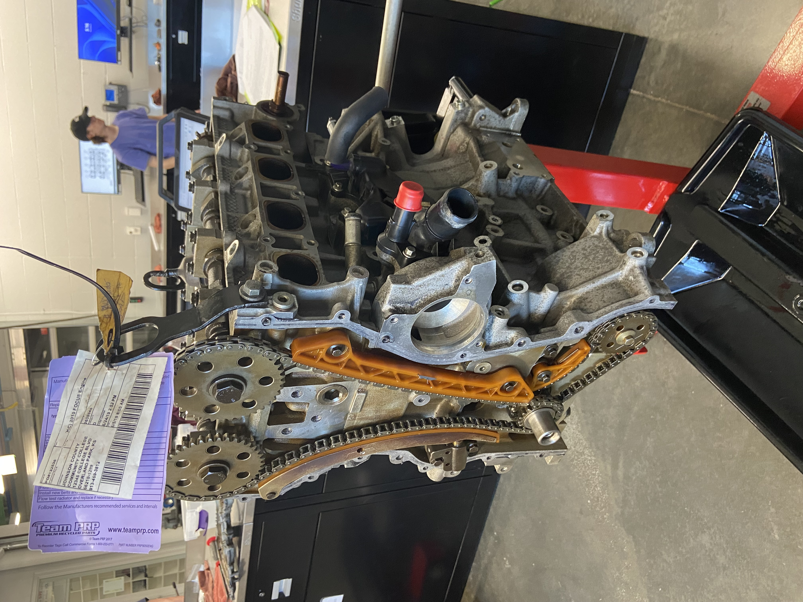
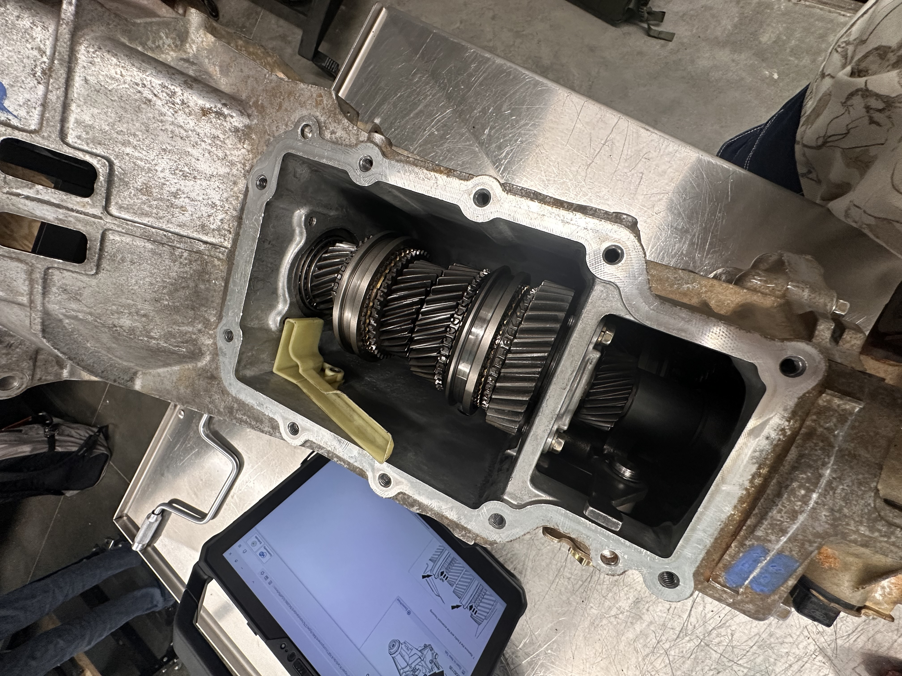
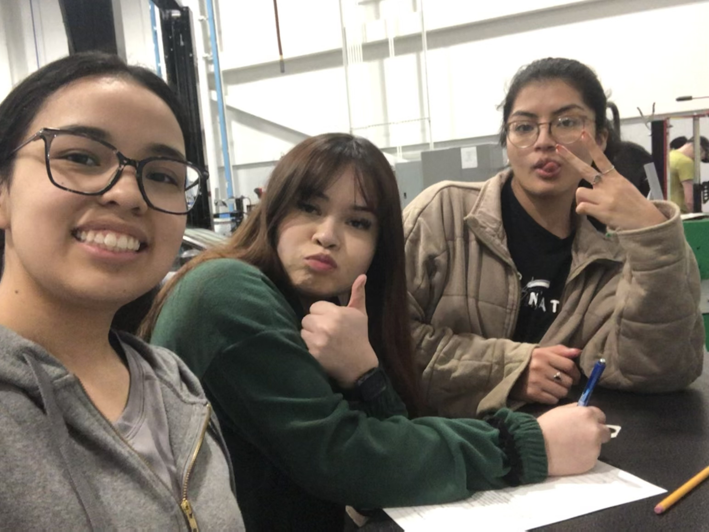

Meet the Mechanic
“It’s a never-ending battle of making your cars better and also trying to be better yourself."- Dan Earnhardt
Hi, my name is Amsi Cazares! I am curently studying at JCCC, working on my associates of aplied sciences for the Automotive Technology program. I am on my last semester before I graduate, so I am super excited to finish and see what the future holds.
Throughout my years of study, I've dived in into many different subjects, for example, in high school I was in the Medical Profession academy, because before deciding to be a mechanic, I wanted to be a Pediatrician. So, I gave four years into the study of biology, which is something that still interests me for later in the future. I was also in robotics and science olympiad, really fun courses. I honestly love to dive in into any hands-on learning and STEM.
Before diving into the project that I have been working on for a while. I am going to talk a little bit about the program and let you know what type of labs and projects we do while in the program. At the very end, I will provide the link of the program, in case you interested in learning more or joining the program too.
If you guys have an questions, you can contact me through instagram @a.caza03
The program will take a dive into eight different core areas:
- Brakes
- Steering & Suspension
- Electrical
- Engine Performance
- Automatic Transmission
- Manual Transmisson
- Heating & Air Conditioning
- Engine Repair
There are other electives that you can take meanwhile being in the program, like:
- Small gas engines
- Hybrid electric vehicles
- Diesel fundamentals
In class things:
4L60E Transmission
2010 Ford Focus Engine

2006 Ford Ranger 3.0L

Electrical Work on 2012 Chevy Equinox
My friends


In automatic transmission class we were tested in disassembling and assembling the transmission. Then it was tested on a dynomometer, if it ran smoothly then you passed.
In Engine class, we kinda did the same thing. We disassembled and reassembled the engine, then later ran it on a RMC ETS100 Engine Tester.
In Manual Transmission class, we disassembled and reassembled the transmission. We didn't test this one though.

Just working on electrical, checking to see if all wires are ok and not damaged.
It is me, Keyli and Adali. All of us working on a worksheet.
Automotive Program @ Johnson County Community College:
For more information, visit their page: Automotive Technology